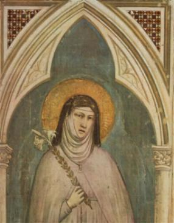

MOSTEIRO DE SÃO JOSÉ
FUNDAÇÃO DE UM MOSTEIRO
Ela conversava com a senhora Guiomar de Ulloa, que era sua grande amiga, abordando o assunto de fundar um Mosteiro a maneira de Freiras Descalça, num Carmelo Reformado, corrigindo o relaxamento que existia atualmente no claustro, e também com Regras mais rígidas que impedisse a frequência de visitas e estimulasse maior empenho e fervor das Freiras nas orações e na contemplação. E assim, começaram a fazer os planos. A senhora Guiomar que era rica, logo se prontificou a utilizar os seus recursos financeiros para impulsionar e manter o empreendimento. E como se tratava de uma obra religiosa, rezaram e suplicaram a DEUS a necessária orientação, uma luz que iluminasse os caminhos por onde deviam seguir para concretizar o projeto. Num dia, após ter recebido a Sagrada Comunhão, ouviu a ordem Divina de se empenhar com todas as forças para construir o Mosteiro por que ele ia servir muito a DEUS. E NOSSO SENHOR ainda lhe disse, que o Mosteiro deveria ter o nome de São José, o qual guardaria uma das portas da Casa e NOSSA SENHORA guardaria a outra, enquanto ELE, CRISTO, estaria junto as religiosas. Esta mensagem ela recebeu tão clara, que não podia duvidar da aprovação e o estímulo de JESUS.
BUSCOU APROVAÇÃO DAS AUTORIDADES
Teresa levou o fato ao conhecimento do seu Confessor, Padre Doménech, que embora prevenindo das dificuldades, aprovou e recomendou que ela conversasse com o Prelado (o Provincial do Carmo Padre Ángel de Salazar). Teresa não foi, mas a senhora Guiomar, a sua companheira no projeto, foi em seu lugar. O Padre Provincial concordou com bondade, deu todo apoio e lhe disse que admitiria a nova Casa. Agora cuidando do item das despesas diárias que o Mosteiro ia ter, depois de analisarem todos os aspectos, decidiram e estabeleceram que não houvesse mais de treze Freiras no Mosteiro.
E assim foram definindo as linhas de funcionamento da Nova Casa. Todavia, antes de colocar em prática a realização do projeto, Teresa decidiu escrever ao prezado Frei Pedro de Alcântara, contando-lhe tudo e lhe pedindo conselho e orientação. Frei Pedro respondeu dizendo que ela não tivesse qualquer receio e não deixasse de construí-lo, lhe dando uma completa orientação das providências que devia agilizar.
TEMPESTADE NO HORIZONTE
Mal o sorriso de alegria e do entusiasmo se desenhavam em sua face, desencadeou uma abominável batalha, representada por muitas censuras e uma grande perseguição realizada por pessoas e autoridades. Foram palavras pesadas, deboches, críticas, insinuações malévolas e muito mais, dirigidas a ela e a sua companheira. Ficaram muito tristes, aflitas e aborrecidas. Diante do Sacrário Teresa rezou ao SENHOR, chorou muito e suplicou orientações. E DEUS não se fez esperar, derramou uma imensa consolação dizendo-lhe: “Lembre-se do que se passou com os Santos que fundaram as Ordens Religiosasâ€... Sem dúvida, passaram terríveis perseguições muito mais fortes e severas, do que aquelas que ela estava atravessando. E que por isso mesmo, ela não podia e nem devia desanimar diante do trabalho, não podia ceder espaço as ofensas, a inveja alheia, na luta para a concretização do seu ideal. E lhe disse também algumas coisas para ela transmitir a sua companheira, para animá-la no mesmo ideal. O resultado foi imediato e maravilhoso, elas ficaram cheias de ânimo para continuar e resistir a todas as ofensivas negativas e perversas. Logo, a maioria das pessoas que inicialmente não aceitavam o projeto do novo Mosteiro, passaram a olhá-lo com mais atenção e acolhê-lo com simpatia, inclusive, diversas daquelas pessoas até decidiram ajudar financeiramente.
Estando as coisas nestes termos, e sempre com a ajuda de muitas orações, Teresa e Guiomar compraram uma casa em bom lugar, para instalar o Mosteiro. Era pequena, mas para começar estava muito boa. Entretanto, na hora de passar a escritura surgiram problemas de diversas naturezas, e tão graves eram, tendo as autoridades do Carmelo da Encarnação ficado tão acesas e agressivas, que ela foi desautorizada pelo seu Confessor a continuar com o projeto.
CONTORNANDO O OBSTÁCULO
Teresa ficou muito triste, permaneceu em orações e num profundo silêncio que durou de cinco a seis meses para não desobedecer à ordem do seu Confessor. Mas no tempo certo, o SENHOR providenciou tudo: mudou o Reitor da Companhia de JESUS e também transferiu o seu Confessor, trazendo outras pessoas mais preparadas espiritualmente. E assim, por ordem Divina, o projeto do novo Mosteiro re-iniciou a sua caminhada. Ficou decidido que tudo seria feito com o maior segredo possível, para evitar a especulação de pessoas mal intencionadas, a inveja e as despeitadas críticas. Prepararam um artifício legal. Uma irmã de Teresa, que residia em outro local foi quem comprou a Casa como se fosse para ela mesma, com dinheiro que o SENHOR conseguiu por diversas vias. Assim, a sua irmã e o marido vieram para Ávila e passaram a viver normalmente naquela casa.
LIMPA DE TODOS OS PECADOS
A vida continuava com os seus dias de muito trabalho e no seu interior, o maligno a fustigava com maldades e pensamentos negativos. Ela lutava, suplicava o auxilio de DEUS e do seu Anjo da Guarda. Descreve Teresa: “Dia 15 de Agosto, festa da Assunção de NOSSA SENHORA aos Céus, eu estava rezando durante a Santa Missa, e veio a minha mente meus muitos pecados que em outro tempo havia confessado naquele Mosteiro da Ordem de São Domingos, e então, senti uma emoção tão grande que cheguei a enfraquecer as minhas forças e me assentei sem condições de adorar JESUS naquele exato momento da Consagração. Isto por que tive uma clara visão. Parecia-me que me vestiam uma roupa muito branca, cheia de claridade. Vi NOSSA SENHORA a minha direita e São José à esquerda, que me colocavam aquela roupa. Entendi então, que eu estava totalmente limpa dos meus pecados. Assim que terminaram, NOSSA SENHORA pegou em minhas mãos e me disse que sendo eu devota de São José e colocando no Mosteiro o nome dele, ficasse tranquila, por que se realizarão todas as coisas, que ela pretendia fazer do Mosteiro e o mesmo, servirá muito a NOSSO SENHOR e a eles também. Que não temesse, por que eles me guardariam e JESUS, Seu FILHO, já havia prometido guardá-la também. Como sinal de que isto se cumpriria, pareceu-me que a VIRGEM MARIA colocou em meu pescoço um lindo e precioso colar de ouro e pedras preciosas com uma Cruz de muito valor, totalmente diferente daqueles que existem por aqui. NOSSA SENHORA estava linda! Vestida de branco com grandíssimo esplendor! O glorioso São José, pareceu-me como sempre, simpático, modesto e em silêncio, mas observei a sua presença, exatamente como nas imagens que costumamos ver. Ficaram um pouco comigo e depois os vi subir ao Céu, acompanhados por grande multidão de Anjos. Tudo maravilhoso e encantador. Fiquei muito enlevada e recolhida em oração, como se estivesse fora de mim, sem me poder mover, nem falar, por algum tempo".
"Quanto ao Mosteiro, o SENHOR recomendou-me que para legalizá-lo recorresse diretamente a Roma, por certa via que ELE me ensinou. Disse que ELE faria com que viesse por ali, a licença de funcionamento (o Breve). E tudo transcorreu da melhor forma como ELE indicou. Para as demais providências convinha que se prestasse obediência ao Bispo local. Eu não o conhecia, mas assim que o procurei, quis o SENHOR que ele fosse tão bom e favorecesse tanto esta Casa, como era necessárioâ€.
MISSÃO EM TOLEDO
Por maior cuidado que existisse seria impossível manter em total segredo o projeto do Novo Mosteiro. O receio de Teresa é que a notícia chegasse ao Provincial, por que ele que no início era favorável, agora, influenciado por opiniões diversas, não mais concordava com a Nova Casa. Mas o SENHOR remediou a questão. Em Toledo, uma cidade distante 120 quilômetros, morava a senhora Luísa de la Cerda que estava com tão elevado grau de aflição pelo falecimento do marido, Antonio Ares Pardo de Saavedra, Marechal de Castilla, que se temia pela saúde dela. A senhora Luísa teve noticias de Teresa. O SENHOR permitiu que lhe dissessem coisas muito boas sobre ela. E do mesmo modo, o SENHOR incutiu um grande desejo na mulher de conhecê-la, na certeza de que Teresa ia consolá-la realmente.
Por outro lado, esta senhora conhecia muito bem o Provincial que Teresa temia. E assim essa Senhora mandou um pedido ao Provincial para que ele conseguisse que Teresa fosse visitá-la. O Provincial atendendo a solicitação daquela senhora da sua amizade mandou uma “Ordem com Preceito de Obediência†a Teresa, para que fosse imediatamente com outra companheira para atender a Senhora Luisa. Teresa recebeu a Ordem na noite de Natal. Causou-lhe certo alvoroço. Rezou muito e pediu orientação a DEUS, que lhe disse: “Não deixe de ir e não peça e nem ouça pareceres de ninguémâ€.
Teresa viajou e se apresentou a mencionada senhora no seu palácio em Toledo. Desde o inicio a simpatia e amizade ocupou o coração das duas, e então, aconteceu que a senhora Luisa teve uma melhora tão acentuada e tão efetiva com a presença e as conversas com Teresa, que ficou evidente o desejo e a proteção Divina. Ela era muito religiosa e repleta de bondade, sabia agradecer ao bem que lhe faziam, pelo imenso amor a DEUS, e por isso mesmo, sua cristandade supriu o que faltava a Teresa. Teresa ficou sem jeito, não queria aceitar nada, apesar da grande insistência da senhora, e assim, não sabendo o que fazer, só aceitou por que tudo seria empregado para servir ao SENHOR.
PROJETO DE OUTRO MOSTEIRO
Permaneceu ajudando esta senhora durante mais de seis meses. Nesta mesma época, o SENHOR ordenou a Teresa que tivesse notícia de outra mulher muito religiosa e amiga da Ordem, que queria conversar com ela, embora estivesse há mais de 400 quilômetros de distância em Alcalá de Henares. O SENHOR havia inspirado a esta mulher como fez com Teresa, no mesmo mês e no mesmo ano, que fizesse outro Convento desta Ordem, como Teresa ia fazer, um Carmelo Reformado. E a inspiração foi tão forte, que esta mulher teve um verdadeiro desejo, vendeu tudo o que tinha, e foi a Roma buscar autorização. Era mulher de muita penitência e oração, o SENHOR lhe concedia muitas graças, e NOSSA SENHORA lhe apareceu mandando-lhe que fizesse exatamente aquilo. Era a senhora Maria de Jesús Yepes, que foi aya do Rei da Espanha, Felipe II. Encontrando-se com Teresa, mostrou-lhe os despachos que trouxe de Roma e nos 15 dias em que estiveram juntas, combinaram como haviam de construir o Mosteiro. Depois de acertadas as diretrizes de trabalho, ela se despediu e retornou a sua cidade.
Agora chegou o momento de Teresa se despedir da senhora Luísa a quem ela ajudou pela Vontade de DEUS. Seu Confessor havia solicitado que voltasse a Ávila. Foi um momento de grande tristeza, por que mesmo sendo uma mulher muito religiosa a senhora Luísa ficou verdadeiramente triste e lamentou muito. Teresa para contornar a situação, prometeu revê-la em outra oportunidade e por cartas, lhe escreveu em diversas ocasiões.
O BREVE PARA O SEU MOSTEIRO
Na mesma noite em que retornou, chegou de Roma a sua amiga Guiomar de Ulloa em companhia do Padre Ibañez, com o "Breve" (do Papa Pio IV) para funcionamento do seu Mosteiro. Ela ficou admirada com a rapidez que o documento foi preparado. Também se encontrou com Frei Pedro de Alcântara e outro cavaleiro muito servo de DEUS, que estavam na cidade. A providência Divina agindo, ficou acertado que os dois iam visitar o senhor Bispo e, com a lógica dos argumentos conseguiram que ele aceitasse o Novo Mosteiro. Tudo foi feito com grande sigilo, por que ainda parte do povo era contrário ao Novo Mosteiro. E assim, o SENHOR ordenou que o cunhado de Teresa que morava na casa com a irmã dela, adoecesse. E como a irmã de Teresa estava ausente, ajudando parentes em outra cidade, concederam-lhe autorização para tratar do seu cunhado, ela que ainda estava no Mosteiro da Encarnação. Conta Teresa:
“Foi coisa de espantar, pois meu cunhado não permaneceu doente além do tempo necessário para concluirmos toda a parte legal do Mosteiro. E quando foi preciso que ele tivesse saúde para sair e deixar a Casa desocupada, logo o SENHOR lhe restituiu a saúde prontamenteâ€.
VIDA PARA O MOSTEIRO DE SÃO JOSÉ
E com a maior rapidez foi preparada a casa para funcionar como Mosteiro e também, levaram ao conhecimento das autoridades civis da instalação e funcionamento do mesmo. E assim, estando tudo terminado, o SENHOR quis que no dia de São Bartolomeu tomassem hábito algumas moças. Um sacerdote com licença do senhor Bispo, instalou o Sacrário e colocou o SANTÍSSIMO SACRAMENTO, e assim com toda autoridade ficou fundado o Mosteiro do Glorioso São José, no ano de 1562. Dizia Teresa: “Por imperfeito que fosse eu desejava ardentemente a fundação para me afastar de tudo e guardar a minha profissão de fé, o chamamento Divino com mais perfeição e a clausura como desejava a serviço do SENHOR. Para mim foi como estar em glória, ver colocar o SANTÍSSIMO SACRAMENTO e as quatro pobre órfãs receber o hábito, tornando-se servas de DEUSâ€.
Descreve a Irmã Teresa: “Guardamos a Regra de NOSSA SENHORA DO CARMO vivida sem mitigação (sem abrandamento), senão como a ordenou Frei Hugo, Cardeal de Santa Sabina, dada em 1248, no ano V do Pontificado do Papa Inocêncio IV".
O outro Mosteiro, que aquela senhora devota,
Irmã Maria de Jesús Yepes fundou com o apoio de Santa Teresa, o SENHOR também a favoreceu.
Foi construído em Alcalá de Henares, e também não lhe faltou contradições e
aborrecimentos com fartura, que lhe deram grandes trabalhos. Mas, naquela Casa,
denominada Convento das Carmelitas Descalzas de La Concepción, também conhecido
como “Convento de La Imagenâ€
, da mesma forma que em Ávila, guardou-se
a perfeita observância da primitiva Regra. 
SANTA CLARA TAMBÉM AJUDOU
No dia da festa de Santa Clara, 11 de Agosto, Teresa participando da Santa Missa, após a Sagrada Comunhão, a Santa lhe apareceu sorridente e com toda a sua formosura a estimulou continuar firme no seu ideal, que ela lhe ajudaria com muito prazer. Teresa com alegria lhe agradeceu e pediu as orações dela. Logo a promessa da Santa começou a se concretizar: perto do Mosteiro de Teresa havia um Mosteiro de Freiras Clarissa, da Ordem de Santa Clara, que começou a sustentá-la. E inclusive, o mesmo regime de pobreza que as Irmãs Clarissa cultivavam Teresa também adotou para a sua Nova Casa, viviam de esmolas. Rezavam muito e sentiam que a mão de DEUS protegia o Mosteiro.
TRISTEZA DE PERMANECER LONGE DAS SUAS IRMÃS
A pobreza extrema do Novo Convento de São José escandalizou os habitantes e as autoridades de Ávila, o que colocou o pequeno Mosteiro e sua Capela inclusive sob o risco de serem suprimidos. A pressão foi tão grande, que Teresa foi obrigada por ordem do Confessor, a permanecer no Convento da Encarnação. E lá ainda ficou durante um ano, até que a pressão contrária amainasse. As outras irmãs permaneceram no Novo Convento de São José, rezando, trabalhando e cumprindo a nova Regra. Todavia, a Mão de DEUS tocava os corações de modo a se concretizar uma segurança para a obra, de tal forma, que estimulou os patrocinadores, incluindo São Luis Beltran e o senhor Bispo de Ávila, que ajudaram efetivamente, não permitindo que a animosidade destruísse a obra.